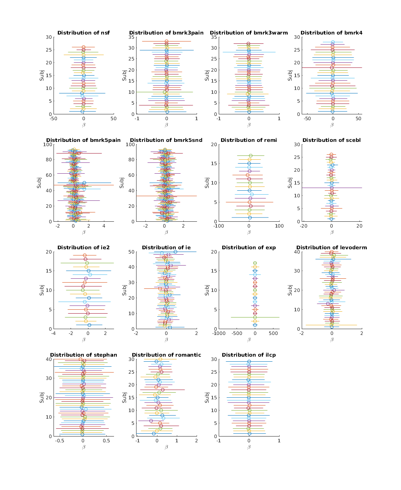
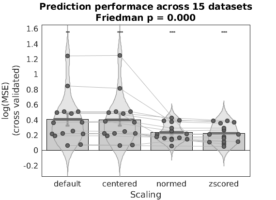
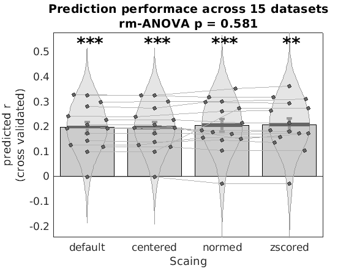
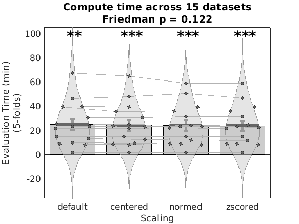

Contents
INTRODUCTION
This page demonstrates how to use the (private) single trials dataset to formally compare algorithm performance, using the borderline trivial case of comparing performance under different rescaling procedures. It is simple to implement, and despite its conceptual simplicity is an unanswered question as of the time of this writing.
Single trial coefficients vary considerably across studies in systematic ways. Although different experimental conditions are expected to yeild different coefficient maps, there are considerable differences in the basic statistical features of these maps across studies which are more likely due to differences in statistical design than experimental design, and are thus unintended artifacts of the analysis procedure. In order to predict outcomes in one study based on models fit in another study we need to minimize variation due to statistical design choices, in particular spurious differenes in the statistical properties of these coefficients.
Additionally, parametric statistical maps in fMRI often use arbitrary units. Not only is the scale of outcome measures often arbitrary (for instance a pain rating scale might vary form 0-8 or 0-100. There may be anchors throughout the scale or only at the ends, it might be logarithmic or it might be linear; there are few conventions), but the preditor (the BOLD signal) is also not a reliable absolute measure (the situation might be different with something like arterial spin labeling). This suggests the scale of the parametric map (which is typically in unis of DV/IV) might be arbitrary.
Studies with similar task conditions often show differences in the magnitude (mean and variance) of coefficient estimates, leading to use of mean centering trials, l2-norming trials or z-scoring trials, in an attempt to correct for these artifacts. However, whether these scaling procedures remove task relevant biological information or not remains an open empirical question.
Here we use 5-fold cross validation in each of 15 datasets to establish whether within study predictive accuracy is improved or harmed by any of these three scaling procedures. The presumption is that within study the statistical design is invariant, and any change in performance due to these scaling procedures can therefore be attributed to a loss of sensitivity for biologically meaningful consequences of the experimental design. By examining 15 datasets we can informally differentiate variantion in performance due to chance, vs. systematic differences due to scaling choices, and thereby inform application of these scaling procedures to future MVPA decoding methods.
We use SVR as a method of MVPA based brain decoding, but similar results would be expected with many other linear machine learning algorithms (e.g. PCR). SVR is simply used for its performance advantage.
close all; clear all; t99 = tic; warning('off','all'); addpath(genpath('/projects/bope9760/CanlabCore/CanlabCore')); addpath(genpath('/projects/bope9760/spm12')); addpath(genpath('/projects/bope9760/single_trials_overview/repo')); % single_trials repo addpath('/work/ics/data/projects/wagerlab/labdata/projects/canlab_single_trials_for_git_repo/'); % single trial data on blanca st_datasets = {'nsf','bmrk3pain','bmrk3warm','bmrk4','bmrk5pain',... 'bmrk5snd','remi','scebl','ie2','ie','exp','levoderm','stephan',... 'romantic','ilcp'}; % import studies, suppressing output to minimize clutter (it's long and % redundant with more detailed information we provide below) cmd = 'all_dat = load_image_set(''all_single_trials'')'; fprintf('cmd: %s\n',cmd); evalc(cmd); n_studies = length(st_datasets); study_id = all_dat.metadata_table.study_id; [uniq_study_id, ~, study_id] = unique(study_id,'rows','stable');
cmd: all_dat = load_image_set('all_single_trials')
Warning: The 'rows' input is not supported for cell array inputs.
Study descriptive statistics
notice how across studies each subject shows different mean (circle) and standard deviations (whiskers). Note the x-axis scales. For a model fit to one of these studies to make accurate prediction in a different study with a different \beta domain, the model would need to successfully extrapolate to that different \beta domain outside of its training space. This has very low probability of success, since our models are all linear approximations of the brain response, which is in all likelihood intrinsically nonlinear.
Thus, we have little hope of obtaining accurate absolute predictions in any other study if these \beta effects are task relevant and biologically meaningful. If they are artifacts of statistical design then it should be possible to approximately correct for them using rescaling procedures.
Raw data
figure; for i = 1:n_studies this_idx = find(i == study_id); this_dat = all_dat.get_wh_image(this_idx); subject_id = this_dat.metadata_table.subject_id; [uniq_subject_id, ~, subject_id] = unique(subject_id,'rows','stable'); subplot(ceil(sqrt(n_studies)), ceil(n_studies/ceil(sqrt(n_studies))), i); hold off for j = 1:length(uniq_subject_id) subj_idx = j == subject_id; this_subj_dat = this_dat.dat(:,subj_idx); q(j,:) = quantile(this_subj_dat(:),[0.025,0.5,0.975]); mu = mean(mean(this_subj_dat(:))); sd = std(this_subj_dat(:)); h1 = plot([mu-sd, mu+sd],[j,j],'-'); hold on; h2 = plot(mu,j,'o'); h2.Color = h1.Color; end box off title(['Distribution of ', uniq_study_id{i}]); xlabel('\beta'); ylabel('Subj'); end p = get(gcf,'Position'); set(gcf,'Position',[p(1:2),1024,2048]);
Warning: The 'rows' input is not supported for cell array inputs. Warning: The 'rows' input is not supported for cell array inputs. Warning: The 'rows' input is not supported for cell array inputs. Warning: The 'rows' input is not supported for cell array inputs. Warning: The 'rows' input is not supported for cell array inputs. Warning: The 'rows' input is not supported for cell array inputs. Warning: The 'rows' input is not supported for cell array inputs. Warning: The 'rows' input is not supported for cell array inputs. Warning: The 'rows' input is not supported for cell array inputs. Warning: The 'rows' input is not supported for cell array inputs. Warning: The 'rows' input is not supported for cell array inputs. Warning: The 'rows' input is not supported for cell array inputs. Warning: The 'rows' input is not supported for cell array inputs. Warning: The 'rows' input is not supported for cell array inputs. Warning: The 'rows' input is not supported for cell array inputs.
METHODS
compute raw data, centered, l2normed and zscored images for continuous outcome prediction statistics. Fit SVR models to each, and compute 5-fold cross validated predictions of outcomes. See RESULTS comments for subsequent statistical design methodology.
% we don't have the memory to keep all studies in RAM at once for this next % step, so we clear them and will process one study at a time clear all_dat n_studies = length(st_datasets); [d_cverr, c_cverr, l2_cverr, z_cverr,... d_t, c_t, l2_t, z_t] = deal(zeros(n_studies,1)); [d_stats, d_optout, ... c_stats, c_optout, ... l2_stats, l2_optout, ... z_stats, z_optout] = deal(cell(n_studies,1)); if ~isempty(gcp('nocreate')) delete(gcp('nocreate')); end parpool(4) % run each algorithm on each study and save results parfor i = 1:n_studies warning('off','all'); fprintf('Evaluating study %s\n',st_datasets{i}); this_study = st_datasets{i}; this_dat = load_image_set(this_study,'verbose', 0); % for completion datasets retain trials with invalid responses, so % remove them this_dat = this_dat.get_wh_image(~isnan(this_dat.Y)); % this can be removed after dataset update this_dat = this_dat.remove_empty; for j = 1:size(this_dat.dat,2) this_dat.dat(isnan(this_dat.dat(:,j)),1) = 0; end % this is where you quartile the data if you want that % zscore outcome for more interpretable values of prediction MSE % and for easier comparison across studies (which use different outcome % scales otherwise) this_dat.Y = zscore(this_dat.Y); % manually select CV folds to % a) ensure subjects aren't split across test folds (required for % independence assumptions to be satisifed in CV) % b) keep folds the same across algorithms (to reduce slicing % related variance) [~,~,subject_id] = unique(char(this_dat.metadata_table.subject_id),'rows','stable'); cv = cvpartition2(ones(size(this_dat.dat,2),1), 'KFOLD', 5, 'Stratify', subject_id); fold_labels = zeros(size(this_dat.dat,2),1); for j = 1:cv.NumTestSets fold_labels(cv.test(j)) = j; end this_dat_c = this_dat.rescale('centerimages'); this_dat_l2 = this_dat.rescale('l2norm_images'); this_dat_z = this_dat.rescale('zscoreimages'); % default t0 = tic; [d_cverr(i), d_stats{i}, d_optout{i}] = predict(this_dat, 'algorithm_name', 'cv_svr', ... 'nfolds', fold_labels, 'error_type', 'mse', 'useparallel', 0, 'verbose', 0); d_t(i) = toc(t0); % centered t0 = tic; [c_cverr(i), c_stats{i}, c_optout{i}] = predict(this_dat_c, 'algorithm_name', 'cv_svr', ... 'nfolds', fold_labels, 'error_type', 'mse', 'useparallel', 0, 'verbose', 0); c_t(i) = toc(t0); % l2normed t0 = tic; [l2_cverr(i), l2_stats{i}, l2_optout{i}] = predict(this_dat_l2, 'algorithm_name', 'cv_svr', ... 'nfolds', fold_labels, 'error_type', 'mse', 'useparallel', 0, 'verbose', 0); l2_t(i) = toc(t0); % zscored t0 = tic; [z_cverr(i), z_stats{i}, z_optout{i}] = predict(this_dat_z, 'algorithm_name', 'cv_svr', ... 'nfolds', fold_labels, 'error_type', 'mse', 'useparallel', 0, 'verbose', 0); z_t(i) = toc(t0); end
Starting parallel pool (parpool) using the 'local' profile ...
connected to 4 workers.
ans =
Pool with properties:
Connected: true
NumWorkers: 4
Cluster: local
AttachedFiles: {}
AutoAddClientPath: true
IdleTimeout: 360 minutes (360 minutes remaining)
SpmdEnabled: true
Evaluating study nsf
Evaluating study bmrk3pain
Evaluating study bmrk4
Evaluating study bmrk5snd
Loaded images:
Loaded images:
Loaded images:
Loaded images:
Evaluating study scebl
Loaded images:
Evaluating study ie
Evaluating study bmrk5pain
Loaded images:
Loaded images:
Evaluating study bmrk3warm
Loaded images:
Evaluating study levoderm
Loaded images:
Evaluating study remi
Loaded images:
Evaluating study ie2
Loaded images:
Evaluating study romantic
Loaded images:
Evaluating study ilcp
Loaded images:
Evaluating study exp
Loaded images:
Evaluating study stephan
Loaded images:
RESULTS
MSE, correlation between predicted and aboserved and run time for cross validated predictions are provided below.
Performance metrics are evaluated using a repeated measures statistical design. Pearson correlations are z-fisher transformed and compared using rm-ANOVA and Tukey post-hoc tests. Because MSE values are skewed, and duration may not be normally distributed either, these are evaluated using the Friedman test, a nonparametric repeated measures rank test. Post-hoc tests on ranks are performed using an exact test (see exactfrsd for method citation) which evaluates the likelihood of a rank sum given all combinatorial possibilities of ranks.
MSE performance metrics
x = repmat([1,2,3,4],n_studies,1);
y = [d_cverr(:), c_cverr(:), l2_cverr(:), z_cverr(:)];
scales = {'default','centered','normed','zscored'};
[p, ~, stats] = friedman(y,1,'off');
h = barplot_columns(log(y),x,'dolines');
set(gca,'XTick',1:size(y,2),'XTickLabels',scales)
xlabel('Scaling')
ylabel({'log(MSE)','(cross validated)'})
title({'Prediction performace across 15 datasets',sprintf('Friedman p = %0.3f',p)});
a = gca;
a.Title.FontSize = 14;
set(gcf,'Tag','barplot1')
% (post hoc rank test)
pairwise_dif = multcompare(stats,'display','off');
d = pairwise_dif(:,4)*n_studies;
k = size(y,2);
n = n_studies;
p = zeros(length(d),1);
for i = 1:length(d), p(i) = exactfrsd(d(i),k,n); end
disp('Post-hoc tests');
table(scales(pairwise_dif(:,1))', scales(pairwise_dif(:,2))', pairwise_dif(:,4), p(:),...
'VariableNames', {'Model_1', 'Model_2', 'Mean_Rank_Difference', 'pValue'})
Column 1: Column 2: Column 3: Column 4:
---------------------------------------------
Tests of column means against zero
---------------------------------------------
Name Mean_Value Std_Error T P Cohens_d
_________ __________ _________ ______ __________ ________
'Col 1' 0.40846 0.088376 4.6218 0.00039572 1.1933
'Col 2' 0.41 0.089463 4.5829 0.00042607 1.1833
'Col 3' 0.2428 0.02813 8.6316 5.5934e-07 2.2287
'Col 4' 0.22822 0.028577 7.986 1.3976e-06 2.062
Post-hoc tests
ans =
6×4 table
Model_1 Model_2 Mean_Rank_Difference pValue
__________ __________ ____________________ __________
'default' 'centered' 0.2 0.72615
'default' 'normed' 1.2667 0.0078688
'default' 'zscored' 2.4 1.6663e-08
'centered' 'normed' 1.0667 0.027187
'centered' 'zscored' 2.2 5.1484e-07
'normed' 'zscored' 1.1333 0.018415
 pearson-r performance metrics
r = cellfun(@(x1)(x1.pred_outcome_r),d_stats); c_r = cellfun(@(x1)(x1.pred_outcome_r),c_stats); l2_r = cellfun(@(x1)(x1.pred_outcome_r),l2_stats); z_r = cellfun(@(x1)(x1.pred_outcome_r),z_stats); x = repmat([1,2,3,4],n_studies,1); y = [r(:), c_r(:), l2_r(:), z_r(:)]; zr = atanh(y); t = table(st_datasets',zr(:,1),zr(:,2),zr(:,3),zr(:,4),'VariableNames',{'st','mod1','mod2','mod3','mod4'}); Mod = table(scales','VariableNames',{'Scaling'}); m = fitrm(t,'mod1-mod4 ~ 1','WithinDesign',Mod); p = m.ranova.pValue; h = barplot_columns(y,x,'dolines'); set(gca,'XTick',1:size(y,2),'XTickLabels',scales) xlabel('Scaing') ylabel({'predicted r','(cross validated)'}) title({'Prediction performace across 15 datasets',sprintf('rm-ANOVA p = %0.3f',p(1))}); a = gca; a.Title.FontSize = 14; set(gcf,'Tag','barplot2') % (post hoc tuckey-test) disp('Post-hoc tests'); multcompare(m,'Scaling')
Column 1: Column 2: Column 3: Column 4:
---------------------------------------------
Tests of column means against zero
---------------------------------------------
Name Mean_Value Std_Error T P Cohens_d
_________ __________ _________ ______ __________ ________
'Col 1' 0.19636 0.023655 8.3011 8.885e-07 2.1433
'Col 2' 0.19556 0.023632 8.2751 9.2194e-07 2.1366
'Col 3' 0.2049 0.025492 8.0379 1.2961e-06 2.0754
'Col 4' 0.20714 0.025867 8.0082 1.3532e-06 2.0677
Post-hoc tests
ans =
12×7 table
Scaling_1 Scaling_2 Difference StdErr pValue Lower Upper
__________ __________ ___________ __________ _______ ___________ __________
'centered' 'default' -0.00084999 0.00060412 0.51554 -0.0026059 0.00090594
'centered' 'normed' -0.01002 0.013627 0.88129 -0.049627 0.029587
'centered' 'zscored' -0.01245 0.013334 0.7876 -0.051207 0.026307
'default' 'centered' 0.00084999 0.00060412 0.51554 -0.00090594 0.0026059
'default' 'normed' -0.0091697 0.013522 0.90366 -0.048472 0.030132
'default' 'zscored' -0.0116 0.013278 0.81829 -0.050195 0.026994
'normed' 'centered' 0.01002 0.013627 0.88129 -0.029587 0.049627
'normed' 'default' 0.0091697 0.013522 0.90366 -0.030132 0.048472
'normed' 'zscored' -0.0024305 0.0020301 0.63841 -0.008331 0.0034701
'zscored' 'centered' 0.01245 0.013334 0.7876 -0.026307 0.051207
'zscored' 'default' 0.0116 0.013278 0.81829 -0.026994 0.050195
'zscored' 'normed' 0.0024305 0.0020301 0.63841 -0.0034701 0.008331
 evaluation time
x = repmat([1,2,3,4],n_studies,1); y = [d_t,c_t,l2_t,z_t]/60; [p, ~, stats] = friedman(y,1,'off'); barplot_columns(y,x,'dolines'); set(gca,'XTick',[1,2,3,4],'XTickLabels',scales) xlabel('Scaling') ylabel({'Evaluation Time (min)','(5-folds)'}) title({'Compute time across 15 datasets',sprintf('Friedman p = %0.3f',p)}); a = gca; a.Title.FontSize = 14; set(gcf,'Tag','barplot3'); % (post hoc rank test) pairwise_dif = multcompare(stats,'display','off'); d = pairwise_dif(:,4)*n_studies; k = size(y,2); n = n_studies; for i = 1:length(d), p(i) = exactfrsd(d(i),k,n); end disp('Post-hoc tests'); table(scales(pairwise_dif(:,1))', scales(pairwise_dif(:,2))', pairwise_dif(:,4), p(:),... 'VariableNames', {'Model_1', 'Model_2', 'Mean_Rank_Difference', 'pValue'})
Column 1: Column 2: Column 3: Column 4:
---------------------------------------------
Tests of column means against zero
---------------------------------------------
Name Mean_Value Std_Error T P Cohens_d
_________ __________ _________ ______ __________ ________
'Col 1' 25.048 4.5146 5.5483 7.1763e-05 1.4326
'Col 2' 24.528 4.3959 5.5796 6.7877e-05 1.4407
'Col 3' 24.326 4.2398 5.7376 5.1346e-05 1.4814
'Col 4' 24.058 4.1608 5.782 4.7504e-05 1.4929
Post-hoc tests
ans =
6×4 table
Model_1 Model_2 Mean_Rank_Difference pValue
__________ __________ ____________________ ________
'default' 'centered' 1.0667 0.027187
'default' 'normed' 0.6 0.23158
'default' 'zscored' 0.86667 0.076716
'centered' 'normed' -0.46667 0.36128
'centered' 'zscored' -0.2 0.72615
'normed' 'zscored' 0.26667 0.62375
 CONCLUSIONS
dividing by l2 norm and zscoring scaling procedures lead to improvement in performance as assessed by MSE, the centering effect is nonsignificant, and zscoring is significantly better than norming, but no methods show significantly better pearson-r based performance than any other method. The trends in pearson-r mirror the direction of effects seen for MSE though.
The improvements in MSE obtained are obtained in significantly less time for zscores than normed or raw data.
The differences between performance when training on raw data or on zscored data are minor, suggesting results are robust with respect to scaling decisions. Thus, models can be trained and applied to zscored trial maps to facilitate generalization between datasets, with little to no loss of task relevant information, or any real effect on meaningful signal capture whatsoever.
This does not mean that equivalent predictive maps are obtained across scaling procedures, or that the information removed is not biologically meaningful. However, if this information is meaningful, it appears to not be unique, and similar information can be obtained from the scaled pattern information. Further investigation is needed to establish whether the signal removed by rescaling has biological or task significance.
NOTES
this script was prototyped on quartiled data using the fmri_data_st/quintileByY method. Running on single trials takes too long to be practical when develping or debugging code, and this code was only run on single trial data at the very end to generate this output you see here.
fprintf('Script runtime (min): %.2f\n',toc(t99)/60);
Script runtime (min): 647.37